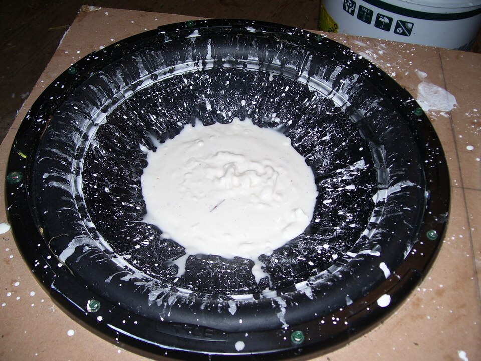

Fluidos cuya viscosidad cambia según cómo se los empuja
El agua, el aceite y la miel son fluidos «obedientes»: si los empujás el doble de rápido, resisten el doble. Pero la pasta de dientes no sale del pomo hasta que apretás, la pintura chorrea menos de lo que esperarías y una mezcla de maicena con agua se vuelve dura como una piedra si la golpeás. Son fluidos no newtonianos: fluidos cuya resistencia a fluir cambia según cómo se los empuja.
David Tong, de la Universidad de Cambridge, lo define en una línea: un fluido newtoniano es aquel en el que las fuerzas de fricción son lineales en la velocidad [1]. Dicho de otra manera, la tensión que hace falta para deformarlo es proporcional a la rapidez con que se lo deforma, y la constante de proporcionalidad es la viscosidad.
Eric Brown y Heinrich Jaeger, de la Universidad de California en Merced y la Universidad de Chicago, explican que en un gráfico logarítmico de la tensión contra la tasa de corte, un fluido newtoniano da una recta de pendiente 1 [2]. Si la pendiente es menor que 1, el fluido se adelgaza al corte; si es mayor, se espesa al corte [2]. Y un mismo fluido puede mostrar varios regímenes según la tasa de corte [2].
En algunos fluidos, cuanto más rápido se los deforma, menos resisten. Brown y Jaeger dan el ejemplo de la pintura: es deseable que se adelgace al corte, porque así los pigmentos fluyen fácilmente al pasar el pincel pero se minimizan las chorreaduras cuando no se pincela [2].
El caso opuesto, el fluido que se espesa al corte, tiene un ejemplo famoso: la mezcla de maicena y agua [2]. Según Brown y Jaeger, una persona puede correr sobre una pileta llena de maicena con agua sin hundirse: el fluido sostiene temporalmente su peso como un sólido, soportando tensiones órdenes de magnitud mayores que las que podría soportar el agua sola [2]. Si se queda quieta, en cambio, se hunde como en un líquido común [2]. Y el efecto es totalmente reversible: cuando se retira el esfuerzo, la mezcla se relaja y vuelve a fluir [2].

En las suspensiones muy concentradas, la viscosidad puede saltar de golpe en órdenes de magnitud por encima de cierta tasa de corte: es el espesamiento discontinuo [2]. Brown y Jaeger repasan tres mecanismos propuestos: los hidroclusters, en los que las partículas se agrupan bajo el corte; una transición de capas ordenadas a una estructura desordenada; y la dilatancia, en la que el empaquetamiento de partículas aumenta su volumen al ser cortado y empuja contra los bordes [2]. Este comportamiento abrió aplicaciones en equipos de protección flexibles, desde protectores deportivos hasta chalecos resistentes a puñaladas, que se vuelven semirrígidos ante un impacto [2].
La multitud en el pasillo: si una multitud camina despacio por un pasillo, la gente se acomoda y pasa. Si todos quieren pasar corriendo al mismo tiempo, se traban hombro con hombro y nadie avanza. Las partículas de maicena hacen algo parecido: despacio se deslizan unas sobre otras; de golpe, se traban (una imagen general de la idea de atascamiento que discuten Brown y Jaeger).
Hay materiales que no fluyen en absoluto hasta que se los empuja con cierta fuerza mínima: la tensión de fluencia. Según la revisión de Daniel Bonn y colaboradores, los ejemplos cotidianos incluyen las pinturas, las espumas, el cemento fresco, las cremas de limpieza, la mayonesa y la pasta de dientes [3]. El modelo más simple es el de Bingham, de 1922: por debajo de la tensión de fluencia el material no fluye, y por encima fluye con una viscosidad [3].
Bonn y colaboradores muestran que el modelo de Bingham describe razonablemente la crema batida, con una tensión de fluencia de unos 33 pascales [3]. Para otros materiales se usa una generalización, el modelo de Herschel-Bulkley, que agrega el adelgazamiento al corte [3]. En la práctica, advierten, medir la tensión de fluencia de un material real, como un alimento, un cosmético o el hormigón, es muy difícil [3].
Algunos materiales, además, dependen de su historia. Bonn y colaboradores muestran el caso de un gel coloidal: en reposo forma una estructura conectada con una tensión de fluencia de 5 pascales, y justo después de fluir queda partido en grumos sueltos, sin tensión de fluencia medible [3]. Con el reposo, la estructura se vuelve a armar: el material «envejece», y el flujo lo «rejuvenece» [3]. A esa dependencia del tiempo se la llama tixotropía [3].
Fluidos con memoria: otros fluidos, como las soluciones de polímeros, tienen elasticidad: las cadenas de polímero se estiran y tardan un tiempo en relajarse. Todd Squires y Stephen Quake describen ese efecto con números adimensionales como el de Deborah y el de Weissenberg, que comparan el tiempo de relajación de los polímeros con el tiempo del flujo [4].
Un fluido newtoniano resiste en proporción a la rapidez con que se lo deforma. Los no newtonianos no: algunos se adelgazan, como la pintura; otros se espesan, como la maicena; otros no fluyen hasta superar un umbral, como la pasta de dientes y la crema batida; y otros cambian con el tiempo, como los geles. Casi todos los fluidos de la cocina y del baño están en esta lista.
Pregunta para la comunidad: El ketchup cuesta sacarlo del frasco, pero una vez que empieza a salir, sale de golpe. ¿Qué combinación de comportamientos de este artículo podría explicarlo?